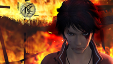
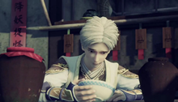
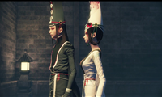

剧情简介
《画江湖之不良人》（又称：《画江湖》系列之《不良人》）是北京若森数字科技有限公司继动画连续剧《侠岚》在获取了巨大的市场成功之后推出的又一部大型三维成人武侠动画连续剧。 这部动画巨制以一种前所未有的方式描述了交织着战乱与黑暗的五代十国时期，黄巢起义、朱温篡位、李氏族诛、友珪弑父、沙陀争霸等著名的历史事件和民间传说贯穿于其中。几位主角同群雄侠隐仗剑高歌江湖，于历史漩涡中的乱世里经历了青春与爱情、背叛与忠诚的沧桑变幻、悲喜轮回，最终成为了终结这个时代、开创新纪元的决定性力量，也堪称是一段浪漫辉煌的中国式武侠历史传奇。 北京若森数字科技有限公司所出品的大型三维武侠动画巨制《画江湖之不良人》之所以取这个名字，是因为其故事背景被设定为唐朝末年，所有的故事线索都紧紧围绕着“不良人”这个组织所隐匿起来的大宗宝藏而展开，所以主创团队将这个名字用作本片的片名，以使观众能对本片有一个最为直观的认识。
主要角色

李星云，身世神秘，流落江湖，时年九岁。渝州城一战，李焕身死，拜在阳叔子门下学艺，李星云的身世为已被杀掉的李唐皇帝的皇子。

通文馆少主，李嗣源养子，实为张天师之子，平时文质彬彬，一喝醉就乱性，酒醒后就断片。奉命劫夺李星云所携龙泉剑，途中偶遇陆林轩并心生爱意，最终与林轩成为情侣。
图片欣赏
- 